13 October 2026 · branch Mikey, merged to main (live) · 18 commits since v0.14 · tests: 337 of 339 pass (the 2 failures are old 3D tests, unrelated)
211FIFA nations, each with a real 2026 ranking
2,131international goals named in one season, every one with a scorer
0Ballon d'Or points for Star Man (was 3 each, you only)
211nations with their own name bank (was 75 sharing 20 small lists)
25%most a casino visit can risk a scandal
Check these
Before each international break: the call-up screen (Called up / Not selected)
Relations → "(your country) manager", starting at 0
Stats → Country: Tables, Matches (with scorers), Scorers, Ranking, Who won
Called up: the League tab and Home switch to your country until the break ends
Premier League or Championship, not picked: "📺 Watch on TV" days in each break
Ballon d'Or night: "Includes X goals and Y assists for your country"
Casino: a long visit can end in a story in the media feed
Any national squad's made-up players: names from that country
How it looks in game
Reaching all of this in a real career takes seasons, so these come from the test page (/star-intl-dev), which plays a career on to each moment. They are the game's own screens at phone size. The names are made up because the test machine has no player database; your game shows real players.
1 · The squad announcement
Before every break and tournament your country plays. The bar is the national manager's opinion of you: in the squad from 34, a starter from 55.
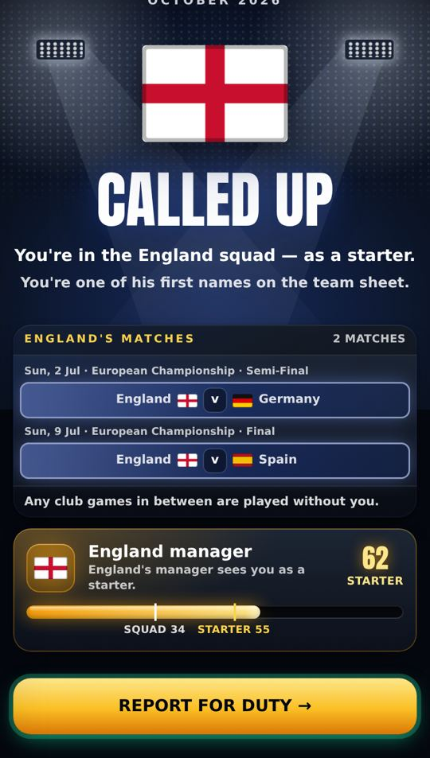
Called up
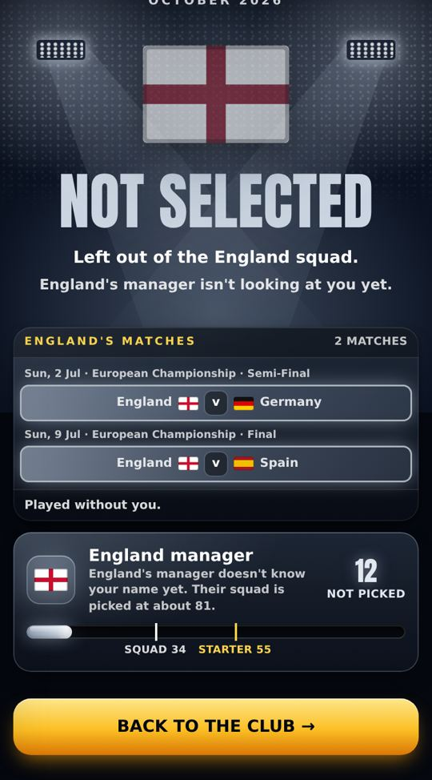
Not selected
2 · On international duty (called up, a Nations League break)
The League tab becomes your country's until the break ends. Scotland, September 2026, one game played.
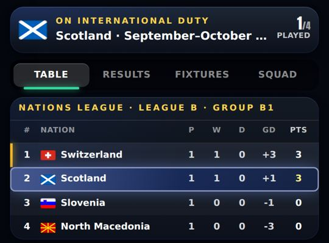
Table
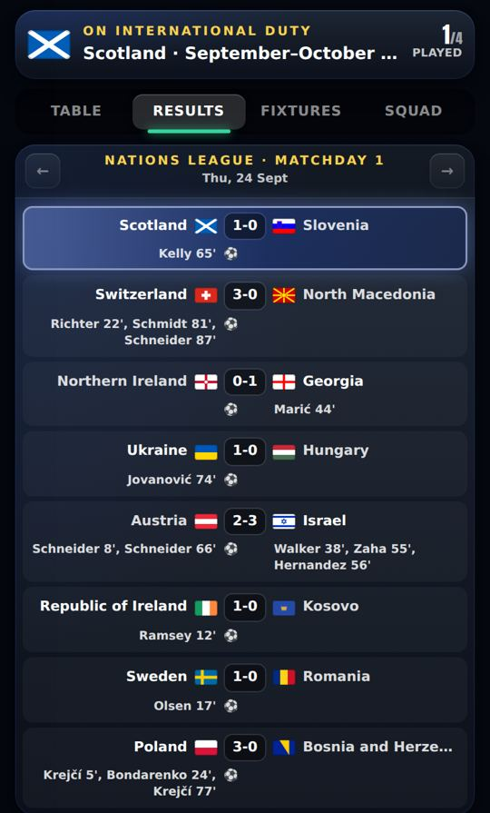
Results, with scorers
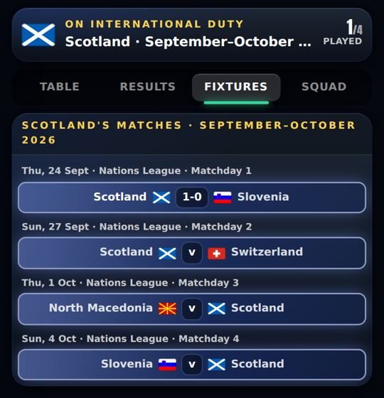
Fixtures
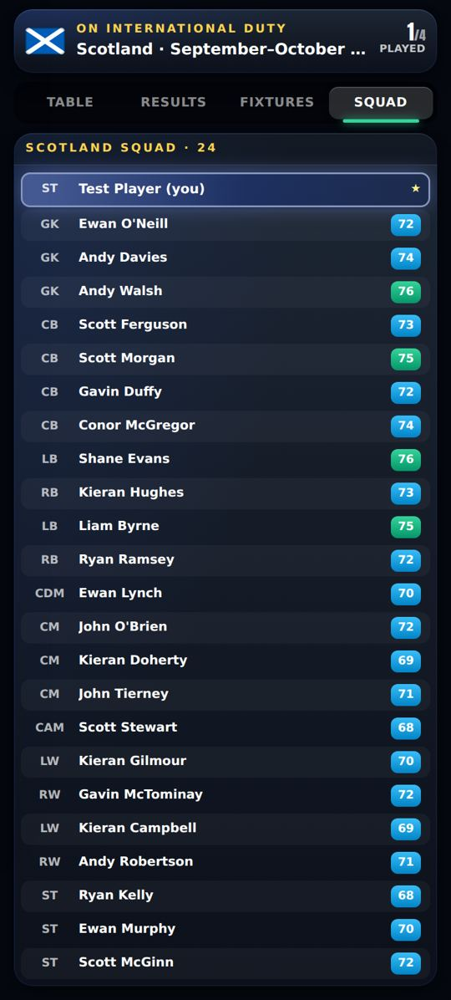
Squad (you at the top)
3 · On duty at a tournament
England at Euro 2028, two group games in.
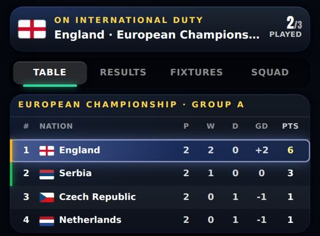
Group table
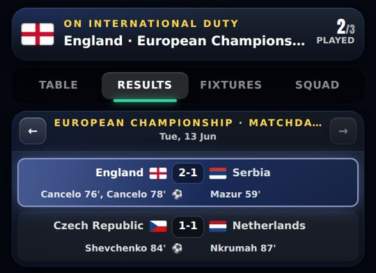
Results
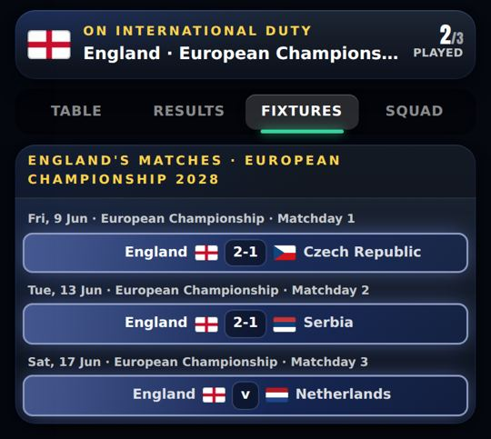
Fixtures
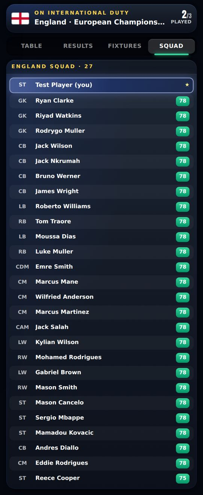
26-man squad
4 · Not picked: watching on TV (Premier League and Championship)
Each of your country's break games is a day on your calendar. You see the score, the scorers, the group and the day's other results.
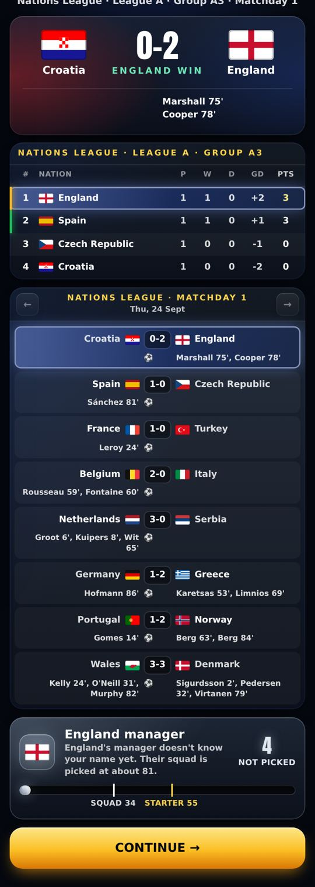
Watched on TV
5 · Stats → Country, after a season
England, after the 2026/27 season with you in every squad.
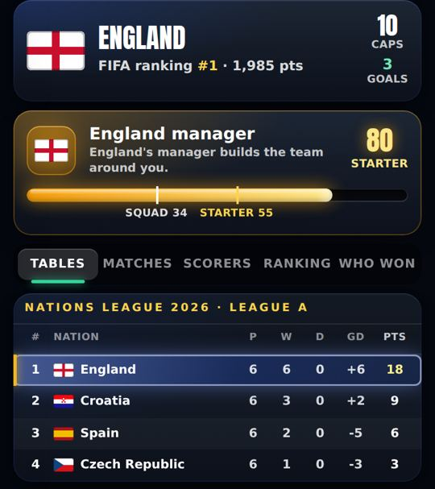
Tables
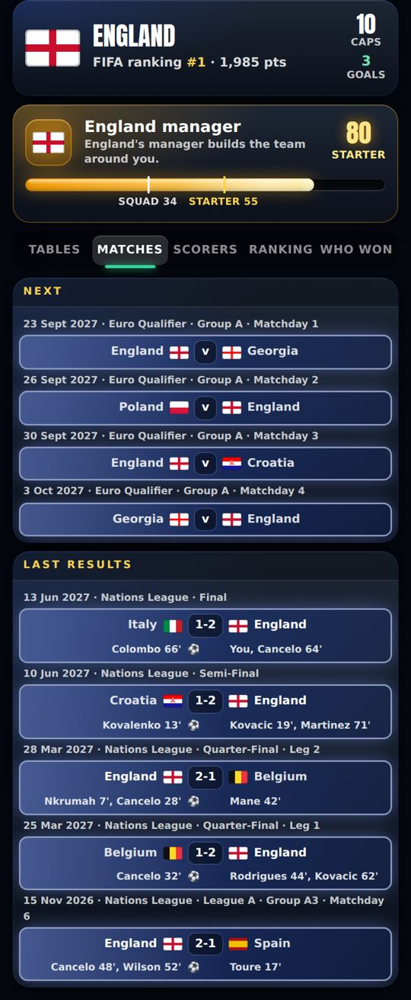
Matches, with scorers ("You" for yours)
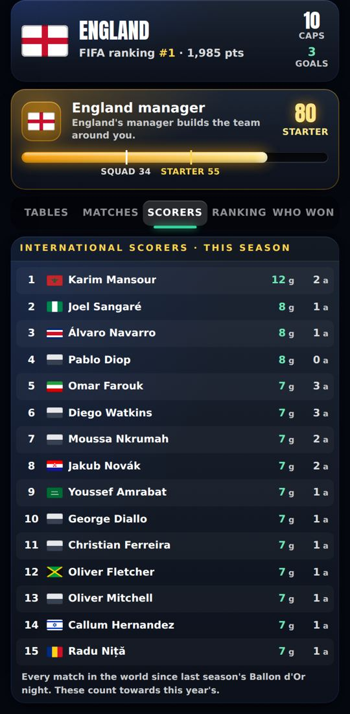
Scorers (the whole world)
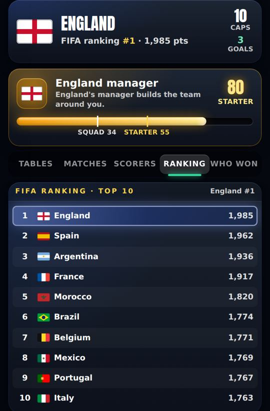
FIFA ranking
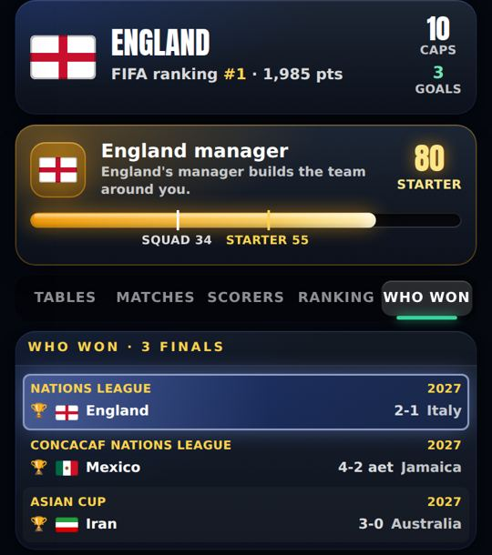
Who won
6 · The Ballon d'Or night
After 2027/28 with Euro 2028 won: the international goals are counted and shown, and the Euro is on the trophy list.
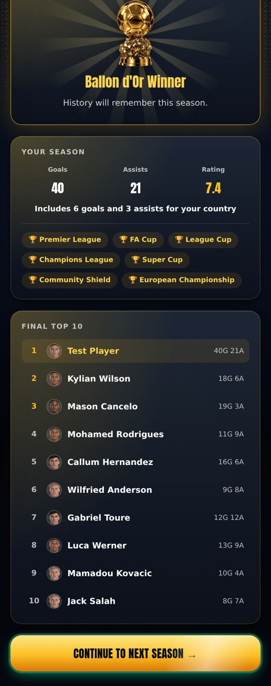
"Includes 6 goals and 3 assists for your country"
Added
International football: the whole world plays
Every confederation's competitions, played out from your save: Nations League (real 2026–27 groups, then the real 2028 format), Euro and its qualifying, World Cup 2030 on with every region's qualifying, Copa América, Africa Cup of Nations, Asian Cup, CONCACAF Nations League and Gold Cup, OFC Nations Cup, and friendlies. Strengths start from the FIFA ranking of 20 July 2026. measured
The details
21,755 matches 2026–2046 in about half a second. Knockouts with the best third-placed teams use FIFA and UEFA's own tables (World Cup 495 rows, Euro 15; AFCON uses the Asian Cup's, which matched the real 2023 draw); 21 tournaments checked. CONCACAF's 6 Copa América places come from its Nations League; played from the real 2026 leagues the game picked the same six as the real 2024.
Getting called up: the national manager bar
0 to 100, starting at 0. In the squad from 34, a starter from 55, the same lines as your club manager. Good club games raise it; a higher division counts more; a big nation is harder to impress. measured
A 3★ Premier League starter
Squad picked at
Bar heads to
England
80.8
0
DR Congo
72.5
42
San Marino
57.7
100
Your internationals on their real dates
Played in the real match, with extra time, penalties or two legs where the competition has them. 23-man squads (26 at a tournament). Friendlies rotate the squad: a regular starts about 2 of 4 and comes off around 55'–75'. measured
National-duty mode
While you're away, the League tab is your country's (Table, Results by matchday, Fixtures, Squad) and Home shows your country. Your club's tables are one tap away. seen on the test page
Following your country when you're not picked
Premier League and Championship: each of your country's break games is a "📺 Watch on TV" day showing the score, scorers, the group and that day's other results. You can train or rest in between. League One and below: no change. Measured: 6 Scotland games in a test season. measured + seen
Every international goal has a scorer
Every match in the world, named from each nation's squad: forwards most, the starting eleven far more than the bench, keepers never, 3 in 4 with an assist. The same save always names the same scorers. One season: 855 matches, 2,131 goals, all named. New Scorers tab on Stats → Country. measured
Made-up national players have names from their own country
When a national squad needs made-up players (Egypt has only seven real players the game knows, say), each nation now names them from its own bank: the real names of its footballers on Wikidata, 166,311 players across all 211 nations, modern players where there are enough. Before, 136 nations, Kenya among them, used one generic, mostly English list. measured
Nation
Made-up players now
Kenya
George Omondi, Boniface Otieno, Willis Echesa, Francis Opiyo
Egypt
Ahmed Hassan, Mohamed Kamal, Haitham Haggag, Ayman Ibrahim
Colombia
Sebastián Torres, Johan Hinestroza, Jhon Cabezas, Sergio Agudelo
Iran
Danial Zarei, Saeed Khatibi, Mehrdad Ghorbani, Ahmad Amiri
Ivory Coast
Yao Coulibaly, Souleymane Camara, Thierry Sanogo, Abdoulaye Kouamé
Surnames, fewest60
Surnames, average147
First names, average92
Before (any nation)24
The rules
No surname twice in a squad (tested on all 211 nations with 26 players each). Common names come up more often. The same save always gets the same names. Surname first for China, Korea and Vietnam; "van", "de" and "El" stay with the surname; a second first name ("José Manuel") isn't a surname; naturalised players' names (a Finnish surname for Kenya) are left out. 50 small nations are topped up from neighbours with similar names (Puerto Rico from Cuba and the Dominican Republic), their own names first. Surnames are real footballers', so a made-up England player can be "Joe Heskey"; the full names are random pairings. Club made-up players still use the old general list.
Casino scandals
A visit can reach the papers. The chance comes from how many bets you place in one visit (2% for the first, +0.4% each after), times your fame (×0.25 Unknown to ×1.5 Icon), never above 25%. How much you win or lose changes the headline, not the chance. measured
Reputation −15, manager −12, team-mates −6, a fine of 2 weeks' wages, the armband taken
4th
As the 3rd, plus banned from the casino for 8 weeks
The small print
One roll as you leave. At most one story a week, and half the chance for 4 weeks after one. Losing 8+ weeks' wages makes it one step worse; winning that much, one step milder. Replaces the old hidden sponsor-only rule.
Changed
Ballon d'Or: club and country together, for everyone
Goals (×4) and assists (×2) now include international ones, for you and every rival. A World Cup or Euro gives 50 trophy points to all 26 in the winning squad (was you only). A night counts everything played since the last night, so a summer tournament you watch from home counts at the next one. measured
Star Man taken out of the Ballon d'Or
Only you could ever get it, so it was a free bonus. About the same comes back for a regular international scorer. reasoned
Star Man before+25 to +35 a season
Star Man now0
7 intl goals now+28
Break weekends in the top two divisions
The Premier League and Championship leave the 4 break weekends empty and still finish on the same weekend. The Premier League now has 4 midweek rounds; the Championship 12 (was 8). League One and below play through. measured
Nationality picker: 217 → 211
Names that aren't FIFA members are gone (Great Britain, Monaco, Martinique, Réunion and others). The old 4 one-match windows and the old summer tournament are replaced by the real calendar.
Kane drawings (test page only)
1,346 drawings from 472 real strikers (300 of Kane's) on the Real moments test page. Harry's 12 Oct decision keeps the game's own drawings in the real game, so this is not in matches. measured
Fixed
International dates were a day late
A rounding error put each match on the next day. Now on the real date. measured
Each international paid a full week's wage
Now only Sunday break games pay, and only in a league that stops for breaks; tournament games pay nothing. measured
Known issues
Not yet played through in a real career High
It's in the game; I checked it on the test page and in tests. Nobody has yet watched a real career reach a Ballon d'Or night with international goals, or Home on duty, with real player names.
Players never age or retire elsewhere Low
Nations' strengths come partly from their real players, who don't age yet (found 5 Oct). Over 20 seasons, most nations stay near their 2026 level.
125 of 211 flags are plain colour bands Low
The game draws flags itself (no download). 86 nations have their real flag; the other 125 (DR Congo, Mali, India, Vietnam and others) show two bands in their kit colours, some grey (see the Scorers still). This was already the case before this round.
Long scorer lists wrap Low
Three scorers on one side can wrap to two lines on a phone.
Next
Copa América 2028 host
Random South American nation until it's announced.
v0.14 · 2026-10-09 · Real Premier League shots playable as test chances; Chances (testing): about 9 Kane-style highlights a match, Old still the default
v0.13 · 2026-10-08 · Play-off, cup and European round-ups with animated brackets; the real UEFA knockout; two-legged League Cup semis; ±25% wage when your club goes down or up; relegation day
v0.12 · 2026-10-08 · The ovation's hugs, dap-ups, pat and claps made in Blender; the farewell's 3D ovation checked in a real match
v0.11 · 2026-10-08 · 3D standing ovation; centre-back Golden Boot and day-one line-ups fixed; more assists; clearances, negotiations and Relations reworked
v0.10 · 2026-10-04 · Relationships rebuilt: bars that move slowly, one game per relationship, happiness decides recovery, no Sponsors bar; injuries switched off
v0.9 · 2026-10-03 · XP rebuilt (slower start, XP by the minute, no double pay) and the XP Book to edit every amount; 3D garden, North/South 2026/27, Club Data
v0.7 · 2026-09-30 · A new 1-10 star career rating separate from overall, 7 boots, dearer Style, 2 training sessions a week, restyled training, contract terms
v0.6 · 2026-09-27 · Five levels of every boot and lifestyle item, a moving ball on the strike screen, commentary that barely repeats, new chants
v0.5 · 2026-09-26 · How you get picked: win your shirt from a better-rated rival, form over 3 games, subs when the score says, cup rotation
v0.4 · 2026-09-25 · Training rebuilt the New Star Soccer way: 30 fixed levels, three tries, stars raise the skill; pace, vision and free kick matter in matches
v0.3 · 2026-09-25 · What you see on the pitch matches where people stand: nearer players and the ball drawn right, corners from the flag; trophy pictures, instant energy modes, feed likes
v0.2 · 2026-09-22 · Energy master plan: in-match energy modes, a real ticking clock, half-time KIB cans, rest days, tougher fatigue rules
v0.1 · 2026-09-21 · Economy, fame and reputation rebuild: Premier League wages to ★100k, fame levels, one reputation number, 50-season careers